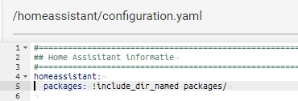

Information:
Installation
Use the method below to provide your ESP with the correct firmware.
USB
Make sure this page is opened in a Chromium-based browser on a desktop. The software installation does not work with a tablet or phone.
NOTE: If your device does not appear in the list, make sure you are using a USB data cable (i.e., not power-only), and try installing the driver for the serial chip.
- Click the blue connect button below, a pop-up window will appear with a list of available USB devices.
- Plug the USB cable into the ESP and connect it to your computer.
- In the pop-up window, there should now appear a new entry. Select this USB serial port and click Connect.
- Choose Install S0tool, then click Install.
- If the installation does not go well, you may need to first hold down the boot button and then click Install.
- Once the installation is completed, click Next.
Add the S0tool to your Wi-Fi network:
- When prompted, select your network from the list and enter the credentials to your 2.4 GHz Wi-Fi network.
- Click Connect.
The S0tool is now connected to your network.
Congratulations 🎉 You have successfully installed the firmware on your S0tool.
Connect
Step 3: Connect to Home Assistant
You have two options to add the S0tool to Home Assistant:
Option 1: During firmware installation
Immediately after setting up your Wi-Fi network (from step 2), you will see a screen with the option Add to Home Assistant.
This opens the My link to Home Assistant.
If you have not used My Home Assistant before, you will need to configure it. If your Home Assistant URL is not accessible on http://homeassistant.local:8123, replace it with the URL to your Home Assistant instance.
Click on Open the link.
It opens your Home Assistant instance and asks you to set up, click OK.
Congratulations 🎉 You have successfully added the S0tool to your Home Assistant instance.
Option 2: Auto discovery
When the S0tool is added to a network to which your Home Assistant instance is also connected, your device will automatically be recognized in Home Assistant.
Under Settings > Devices & Services, your S0tool should be discovered.
Click on Configure, at the discovered device.
It asks if you want to add the device and click Submit.
Congratulations 🎉 You have successfully added the S0tool to your Home Assistant instance.

Sensors for S0tool and Home Assistant
Place this inside your configuration.yaml file.
Make a folder like the name ```packages```
Copy the content from below and make a new file (s0tool.yaml) and place the content in this file from below.
After that safe the file and reboot HA now you have a couple of more sensors for the s0tool.
Blueprint for S0tool and Home Assistant